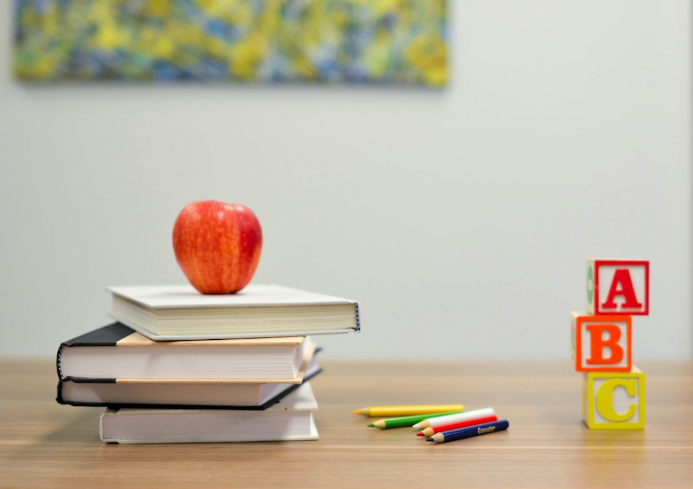
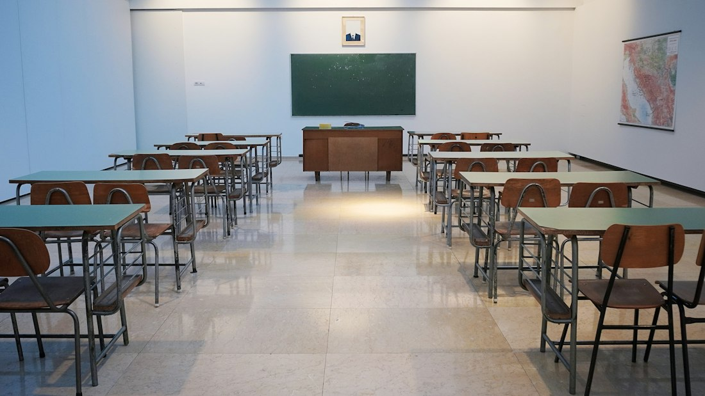
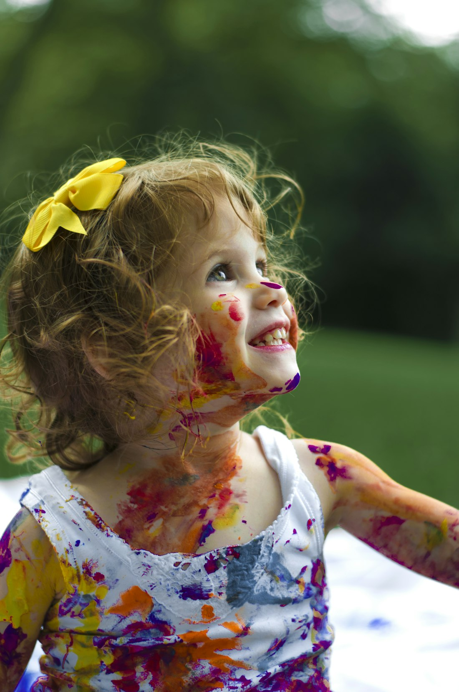

Our work
Where we create impact.
Four connected programs help children begin learning, students stay in school, and young people build skills for the future.
01
Lyari Entrepreneur Academy
Free IT and start-up learning for youth and single mothers.
Explore program →
02
HOL School Preparatory Program
Helping out-of-school children find a path back to learning.
Explore program →
03
HOL KB Campus
Our adopted GBSS Kara Bhai Karim Jee serves 700 students.
Explore program →
04
HOL Preschool
Supporting young children as they take their first steps in learning.
Explore program →